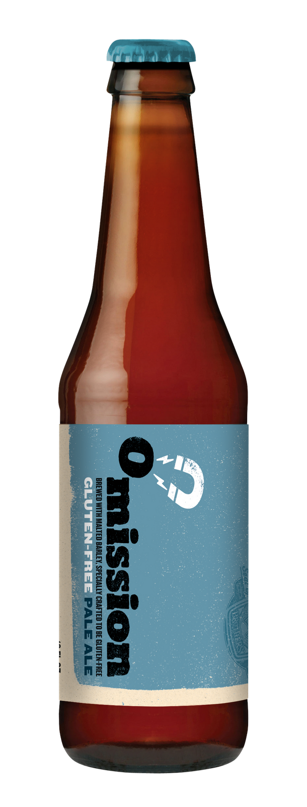
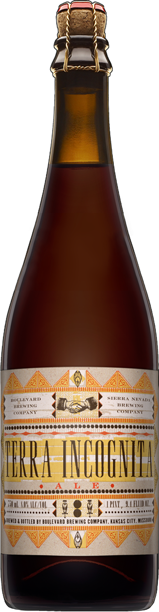
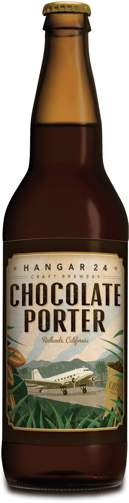
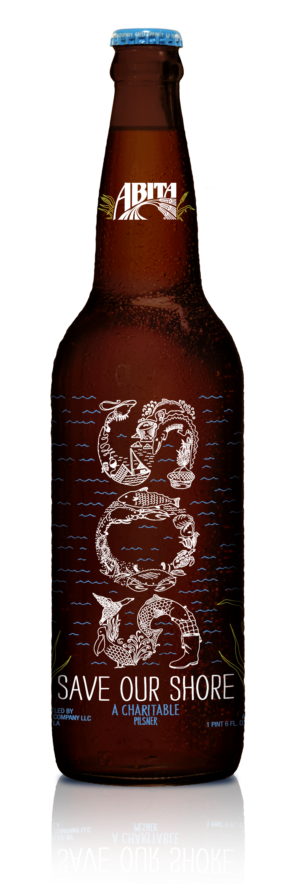

Omission Pale Ale
Disponibilidad: Producida anualmente
Volúmen de alcohol: 5.8 %
La Omission Gluten Free Pale Ale, de Widmer Brewing, está elaborada con todos los ingredientes tradicionales: cebada malteada, lúpulo, agua y levadura, ¡pero sin gluten!
Precio: 5,99 €
BUY

Sierra Nevada Terra Incognita
Boulevard Brewing Co

Hangar 24 Chocolate Porter
Hangar 24 Brewery

S.O.S. (Save Our Shore)
Abita Brewing Company
Email: hello@awesome.shop
Tel: (+34) 931 123 891

Condiciones de venta
Política de privacidad